About Me
-

Waterloo Computer Science
I am in my 2A term studying Honours Computer Science Co-op at the University of Waterloo.
-

Software Developer and Web Designer
Feel free to take a look at my resume. I am constantly self-learning and finding ways to improve.
-
Right to Code
You can check out some of my side projects on Github. I try to make my life and the lives of those around me better through code and technology.
My life goal is to improve the world through code.
Code to Learn
I see the tremendous potential for technological innovation that will take place in my lifetime, and I hope to be a part of that revolution.
Side Projects
Here are some things I have been working on.
Feel free to take a look!
-
I developed AccommodateMeMrGoose, a website that helps First Year Waterloo students choose between the many University residences available according to their preferences. (E.g. Faculty, Meal Plan, Room Style, Features and Amenities, etc) -
I developed ChanceMeMrGoose, a website that calculates one's chances of admission according to the applicant's addmissions information. Currently, I have only sufficient data for the Engineering faculty. However, I aim to incorporate all faculties when there are enough admission statistics available.
-
Hammad Khan and I developed RiskWatch, a prototype solution inspired by the Spotlight Mentorship Program. The Blindspot we were trying to address was the: "Lack of technological innovation in healthcare such as AI assisted analysis and diagnosis." -
The Mr. Goose Collection offers unique, authentic experiences that evoke lasting, treasured memories at the University of Waterloo. I hope the website will serve as helpful source of information and guidance for all future Waterloo students just as how I created it to help me transition into university life.
-
PassNote is an offline password manager I made for my ICS4U7 (Grade 12 Computer Science) culminating assignment and the submission for my IB Higher Level Computer Science Internal Assessment. Made in Java 8 using the Java Swing API.
Click here if you would like to see the video documentation. (Youtube Link) -
I utilized openCV with SikuliAPI in Python to create this Clash Royale Bot for automating gameplay on an android emulator. This is still a work in progress, however, the Python script is able to play the game perpetually without human supervision.
Click here if you would like to see the video documentation. (Youtube Link)
Personal Interests/Hobbies
- I love building and restoring PCs as well as fixing all types of electronics around the house.
- I enjoy monitoring share prices, searching for undervalued companies, and trading speculative stocks.
- I love riding my bicycle and going on hikes to stay active.
- I am also a big fan of the musical Hamilton!
(You can ask me to sing any musical number from Hamilton 😃)
(You can ask me to sing any musical number from Hamilton 😃)